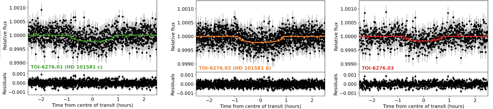
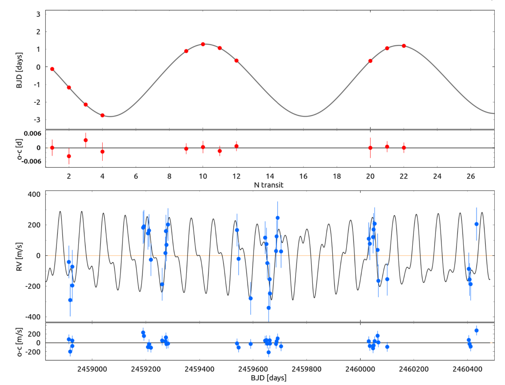
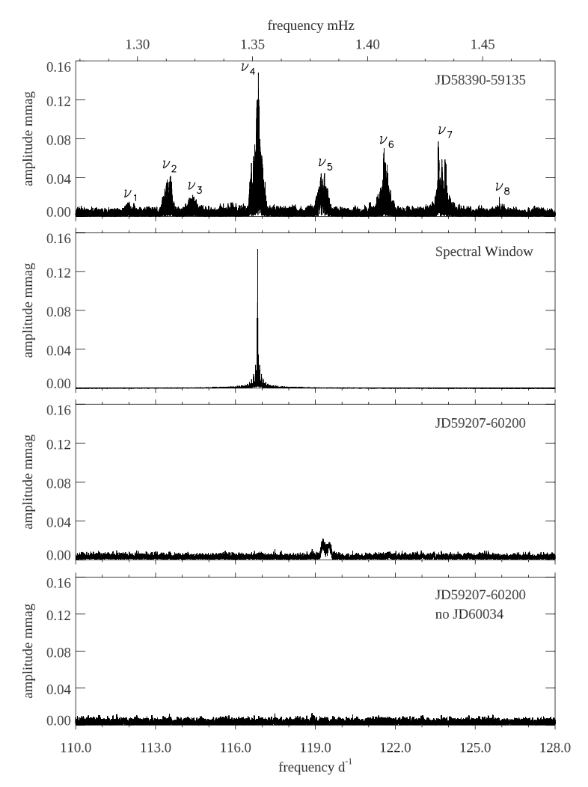

Welcome TESS followers to our latest news bulletin!
This week, we are looking at three recent papers from the archive. Enjoy!
Two Earth-size Planets and an Earth-size Candidate Transiting the Nearby Star HD 101581 (Kunimoto et al. 2024) :
Multi Planet systems are crucial for understanding the formation and evolution of planetary systems beyond our own Solar System. These provide valuable insights into the diversity of planetary configurations and help refine theories about planet formation, orbital dynamics, and the potential for habitable worlds in the Universe. Kunimoto et al. (2024) report the validation of the latest such system, HD 101581, a bright (V = 7.7 mag), nearby (d = 13 pc) K5V dwarf. To analyze the system, the authors combined data from TESS with extensive follow-up and archival photometric and spectroscopic observations from multiple ground-based observatories. TESS observed the target at 2-min cadence in Sectors 63 and 64, and enabled the detection of two clear periodic transit signals, and a potential third. Based on isochrone analysis, Kunimoto et al. (2024) find that the host star has a mass of ~0.7 MSun, radius of ~0.6 RSun, effective temperature of ~4700 K, is metal-poor compared to the Sun ([Fe/H] ~ -0.3), and has an age of about 7 Gyr. The stellar activity is relatively low and the authors find indications for a rotation period of about 30 days. The authors rule out common sources of false positives (i.e. eclipsing binaries, hierarchical triples), statistically validate the inner two planets, strengthen the candidacy of the outermost planet candidate, and confirm the dynamical stability of the system through long-term numerical integrations. From inner to outermost, the planets have orbital periods of 4.47 days (TOI-6276.02), 6.2 days (TOI-6276.01), and 7.9 days (TOI-6276.03), respectively, with evenly-spaced orbits. In particular, the innermost and middle planets are close to a 4:3 mean motion resonance, while the middle and outermost planets are near a 5:4 mean motion resonance, with neither showing evidence for resonant libration. All three planets are Earth-size, with sizes ranging from 0.96 REarth and 0.99 REarth, have orbital inclinations of about 88 degrees, and equilibrium temperatures between 690 K and 834 K. Thanks to TESS, Kunimoto et al. (2024) were able to validate a three-planet “peas-in-a-pod”system consisting of Earth-size planets orbiting HD 101581 – the brightest such system at the time of writing.
TOI-4504: Exceptionally large Transit Timing Variations induced by two resonant warm gas giants in a three planet system (Vitkova et al. 2024) :
Speaking of mean motion resonances in multiplanet systems, these play a vital role in shaping their long-term stability and orbital architecture, and can result in complex dynamics. Measured transit timing variations in such systems offer valuable insights into the masses and orbital characteristics of the transiting planets, and can even help detect additional, non-transiting, planets. Vitkova et al. (2024) present the detection and confirmation of a multiplanet system orbiting the K1V dwarf TOI-4504, based on TESS observations as well as follow-up photometry and spectroscopy. The target was observed by TESS at 30-min cadence in Sectors 1-13, and at 2-min cadence in Sectors 27-38, 61-65, and 67-69, and produced two transiting signals exhibiting strong transit timing variations. The authors performed joint analysis of the photometry and radial velocity measurements and found that the transits are produced by two planets with orbital periods of 2.4 days (TOI-4504 b) and 82.5 days (TOI-4504 c). The host star has a mass of 0.9 MSun, radius of 0.9 RSun, effective temperature of 5300 K, and metallicity of 0.16 dex. TOI-4504 b is a sub-Neptune with a radius of 2.7 REarth and, based on a mass-radius relationship, a calculated mass of about 10 MEarth (too small to be confirmed by the radial velocities). TOI-4504 c is a Jovian planet, with a radius of 0.99 RJup and dynamically-estimated mass of 3.8 MJup. In addition, it shows transit timing variations with a remarkable peak-to-peak amplitude of almost 4 days and a super-period of about 3 years, suggesting dynamical perturbations from an additional, non-transiting planet TOI-4504 d. Vitkova et al. (2024) argue that the latter has a dynamical mass of about 1.4 MJup, and an orbital period of 40.2 days, placing it in a librating 2:1 mean motion resonance TOI-4504 c. The authors confirm the long-term dynamical stability of the system via numerical simulations, and note that more precise observations are needed to further constrain the configuration of the system and estimate the mass of the innermost planet. Utilizing TESS data, Vitkova et al. (2024) were able to detect and confirm the multiplanet system TOI-4504 consisting of an innermost sub-Neptune and two outer giant planets in a 2:1 mean motion resonance producing dramatic transit timing variations with a peak-to-peak amplitude of about 4 days.
HD 60435: The star that stopped pulsating (Kurtz et al. 2024) :
Rapidly oscillating Ap (roAp) stars are a unique subclass of chemically peculiar A- to early F-type pulsators characterized by strong magnetic fields. RoAp stars show persistent brightness changes due to rotational modulations, and are distinguished by high radial overtone p mode pulsations. Kurtz et al. (2024) present a detailed analysis of HD 60435, a known and long-studied roAp oblique pulsator with a rich pulsation spectrum and a rotation period of about 7.7 days that, astonishingly, stopped pulsating during the TESS mission. TESS observed the target at 2-min cadence in Sectors 3, 6, 7-10, 13, 27, 30, 33-35, 37, and 68-69, and at 200-sec cadence in Sectors 61, 62, 63, and 67, and enabled the detection of prominent pulsation amplitude variations at the expected timescale of about 1 day. The target has a mass of about 1.9 MSun, radius of 2.3 RSun, and effective temperature of ~7,500 K. The authors note that HD 60435 was pulsating during observations in 1983, 1984, 1985, 1991, 2014. The pulsations continued in TESS data between 2018 September and 2020 October, after which they ceased in both TESS data and in follow-up observations from LCOGT in 2024. Kurtz et al. (2024) argue that this behaviour is quite unexpected as it is in stark contrast to other roAp stars where the pulsations have been observed to persist on timescales of decades. The authors emphasize that this unique occurrence has broad significance for deeper understanding of the processes that govern stellar pulsations, including the long-standing question of why certain stars within the pulsation instability strips exhibit oscillations while others do not, and offer potential explanations. Thanks to TESS observations of the roAp star HD 60435, Kurtz et al. (2024) detected, for the first time, the complete disappearance of stellar pulsations.

Fig. 1: Taken from Kunimoto et al. (2024). Transit model fits for the three planets in the HD 101581 system, along with the respective residuals.

Fig. 2: Taken from Vitkova et al. (2024). Upper panel: Transit timing variations of TOI-4504 c from TESS (red points), along with the best-fit model (black line) and respective residuals. Lower panel: Corresponding radial velocity measurements from FEROS.

Fig. 3: Taken from Kurts et al. (2024). Amplitude spectrum of the roAp HD 60435. First panel: a timespan of 755 days during which the target pulsated. Second panel: Corresponding spectral window for nu4. Third panel: a timespan of 1004 days after the pulsations stopped. The brief reappearance of nu5 is during the half-sector JD60034.25. Last panel: same as third panel, excluding said half-sector.